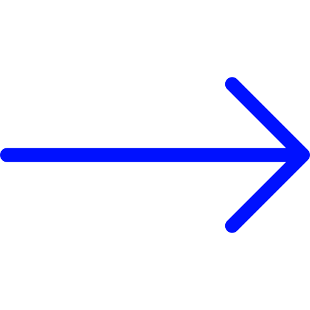

Hola, soy Juana.
diseña-
dora
gráfica
con conocimientos de Front-end.
Ver proyectos
Proyectos
- Diseñadora gráfica
- Programadora Front-end
Mi historia
Soy de una pequeña isla de Canarias situada en España. Aprendí a diseñar para impresión en mis comienzos. Viajé a la Península para terminar mis estudios artísticos y centrarme en el diseño web.
Tengo un Ciclo Formativo de Grado Superior en Gráfica Impresa, un Grado en Bellas Artes y una Formación Profesional en Desarrollo de Aplicaciones con Tecnologías Web. En estos días me encuentro terminando el programa de Samsung DesArrolladoras.
En lo personal, me encanta diseñar y programar páginas webs. La lectura, la playa y el senderismo ocupan mi tiempo de ocio.
Experiencia profesional
Estuve en el Decanato de la Facultad de Bellas Artes de Granada como diseñadora gráfica para impresión, página web, redes sociales y sala expositiva. He estado como experiencia profesional en MCB Soluciones y Cúrcuma Estudio.
Descarga mi Currículum Vítae
Siéntete libre de contactarme. Estaré encantada
de hablar de nuevos proyectos.